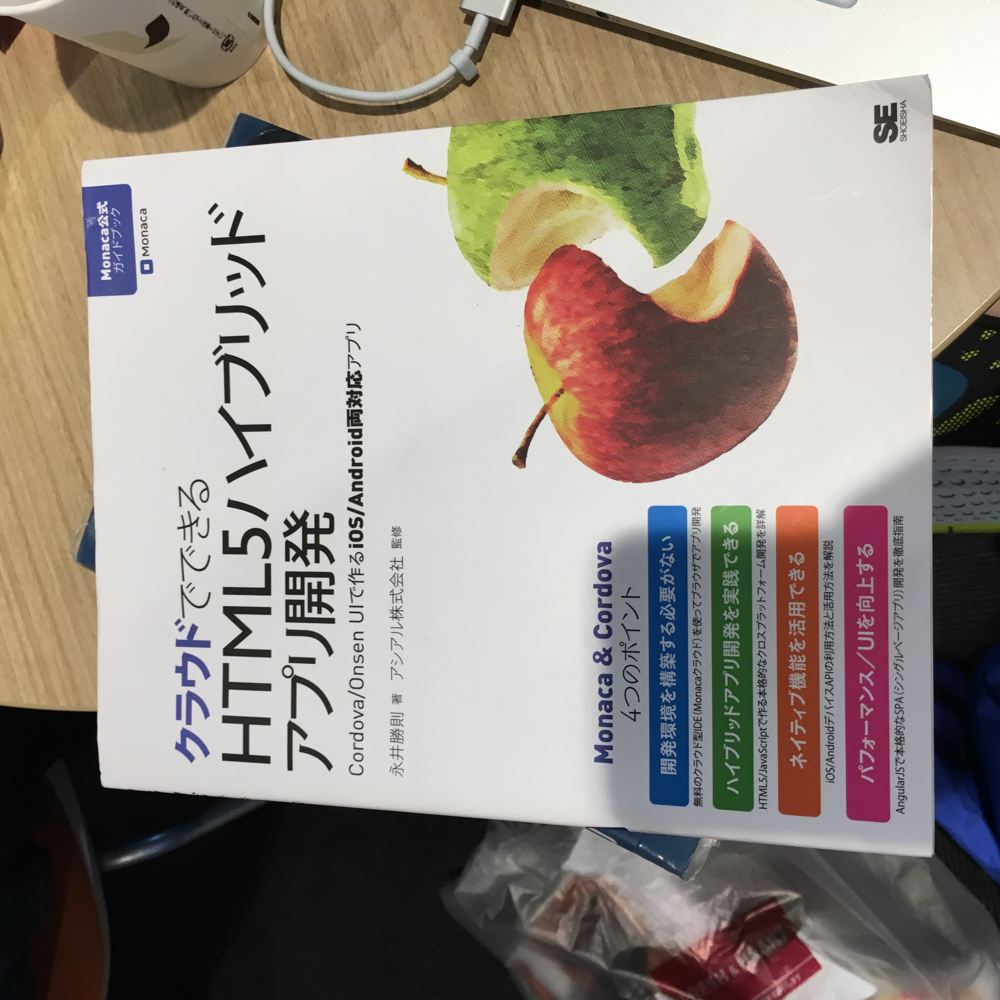

<ons-page>
    <ons-toolbar>
        <div class="left">
            <ons-back-button>戻る</ons-back-button>
        </div>
        <div class="center">購入したノート</div>
    </ons-toolbar>
     <div align="center">  </div>
     <div align="right"><ons-button onclick="myNavigator.pushPage('photo_album2.html')">次へ</ons-button>
         
     </div>
</ons-page>

